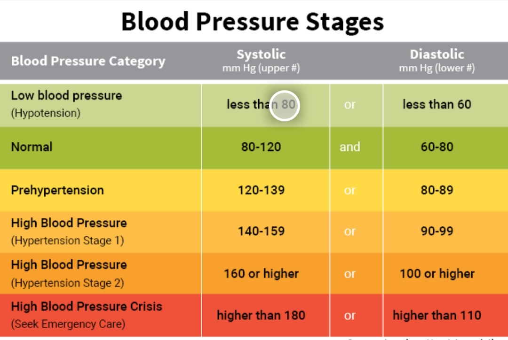
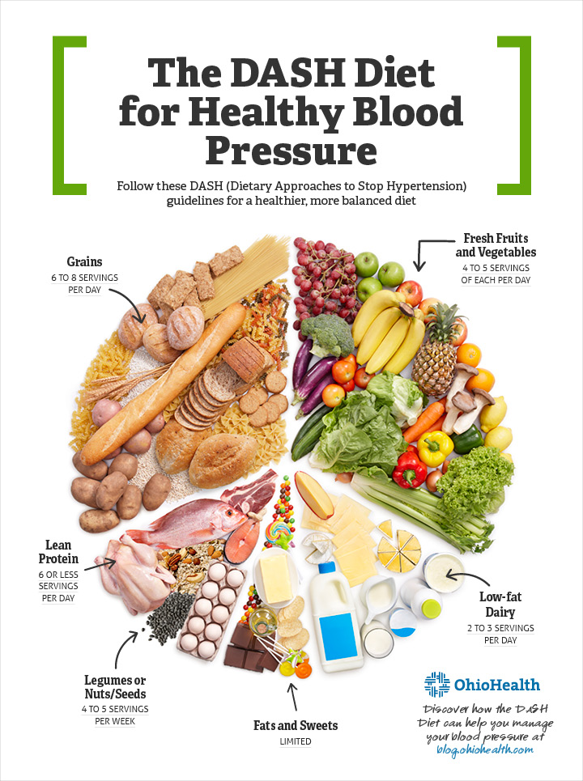

what is Normal Blood Pressure
Blood pressure is the pressure of blood pushing against the walls of your arteries. Arteries carry blood from your heart to other parts of your body.
Your blood pressure normally rises and falls throughout the day.
Blood pressure readings are composed of two numbers—for example, 120/80 mm Hg.
The top number (systolic pressure) measures the pressure in your arteries when your heart beats.
The bottom number (diastolic pressure) measures the pressure in your arteries between each heart beat.
Our blood pressure refers to the amount of force behind the blood as it hits the arterial walls. As the heart pumps the blood, an ideal pressure sees the blood push against the walls that are flexible enough to expand and retract easily. Over time, our age, diet, and physical activity play a role on the elasticity of our blood vessels. With a loss of flexibility due to hardening of the walls, the heart needs to work harder to push the blood.
These factors determine the blood pressure numbers. The systolic number is the top number, and it indicates the pressure as the heart beats or pushes the blood throughout the body. The diastolic number is the bottom number, and refers to the pressure in the arteries when the heart rests between beats. During this time, the heart receives oxygen as it fills with blood.
How to mantain Normal Blood Pressure
Tips for Keeping Normal Blood Pressure
- Exercise. One reason exercise is so effective at controlling blood pressure is because it stimulates your body to release a substance called nitric acid. Nitric acid causes blood vessels to open up, which reduces blood pressure. Exercise also helps to strengthen your heart muscle, reduce stress, and aid weight loss.
- excess weight. There's no getting around the fact that blood pressure goes up as the pounds pile on. Being overweight increases your risk for heart disease and diabetes, too. Losing even 10 pounds can start to make your blood pressure go back down.

- healthily. Eating the right type of diet can lower your risk for high blood pressure or help you return to normal blood pressure. Clinical studies show that a diet high in fruits, vegetables, low-fat dairy, whole grains, poultry, fish, and nuts really works. You also need to avoid fats, red meat, and excess sugar.
- the salt habit. Your body only needs about 500 milligrams of salt a day, but if you are like the average American you may be consuming up to 9,000 mg a day. Studies show that high salt leads to high blood pressure. Current recommendations are to limit salt intake to 2,400 mg per day, the equivalent of about one teaspoon.
- the brakes on smoking and drinking. These are two other bad habits to avoid if you want to keep a normal blood pressure. Alcohol raises blood pressure and adds empty calories. A safe amount of alcohol is only one drink a day for women and two for men. Smoking is not safe in any amount. Nicotine causes blood vessels to constrict and that raises blood pressure. Quitting will also lower your risk of cancer and heart disease.
The only way to know if you have high blood pressure or normal blood pressure is to have a blood pressure reading done by a trained healthcare provider. The American Heart Association recommends a blood pressure reading at least once every two years. If you have had a recent blood pressure reading and you have normal blood pressure, don't take it for granted. Remember hypertension is a common and sometimes silent killer. Push yourself away from the computer, turn off the television, get active, eat your fruits and vegetables, and kick any bad habits.
Diet plan
- Berries
Berries are healthy fruits that help mitigate your blood pressure naturally. Strawberries and blueberries are rich in antioxidant compounds known as anthocyanins, which minimizes the risk of hypertension and other risk factors responsible for heart conditions. Anthocyanins in the berries have been found to boost nitric oxide levels in your blood and taper the formation of blood-vessel-limiting molecules. This helps in lowering blood pressure levels naturally. So, include fresh berries in your high blood pressure diet plan. You can add berries to your smoothies or oatmeal, or you can snack on them after meals.
- Bananas
Rich in potassium, banana is another healthy food that helps treat hypertension. Potassium content in bananas reduces the effects of sodium and minimizes the tension on the walls of blood vessels. You can have a banana in the breakfast or add it to your fruit salad. Expert dieticians can help you add potassium abundant foods, such as avocadoes, sweet potatoes, and beans, among others, to your high blood pressure diet in the right quantities to alleviate your blood pressure levels. Individuals having kidney diseases should have a word with their doctor as an excess of potassium might be harmful to their health.

- Pistachios
Pistachios are known for their powerful effect on lowering blood pressure levels in adults. They are a highly nutritious food containing fibre, protein, healthy fats, antioxidants, and high levels of potassium, which helps reduce blood pressure. High quantities of phytosterols and monounsaturated fatty acids in this nut offer blood-pressure-lowering effects. Pistachios are effective in reducing diastolic as well as systolic blood pressure. So, you can munch on these crunchy nuts as an evening snack or add them to your smoothies or fruit salad.
- Carrots
The staple vegetable carrot is another diet food that helps you manage your blood pressure levels. Crunchy carrots are not just rich in antioxidants but also contain phenolic compounds, such as p-coumaric, chlorogenic, and caffeic acids, which help your blood vessels relax and mitigate inflammation. As a result, it causes a drop in the blood pressure levels of hypertensive patients. So, be sure you add carrots to your high blood pressure diet plan. You can cook the sweet, nutritious carrots or munch them raw. However, eating raw carrots are more effective in lowering blood pressure levels than cooked ones.
- Leafy Green Vegetables
Leafy green vegetables are not just rich in vitamins, fibre, and minerals, but also abundant in nitrates that help lower blood pressure in individuals suffering from hypertension. Some medical research states that the consumption of one or two servings of leafy greens daily can lower your hypertension for about 24 hours. So, adding these nutritious vegetables to your daily diet can work wonders in managing your hypertension and preventing the risk of heart-related conditions. Spinach, kale, cabbage, lettuce, and collard greens are some nutritious leafy greens that can help you in blood pressure management.
- Beets
The consumption of fresh beet juice can work wonders in lowering your blood pressure levels in a while and over time. Beet is rich in inorganic nitrate that helps in alleviating blood pressure in hypertensive patients. Simply drinking a glass of beet juice daily can help you experience incredible benefits for managing your blood pressure. Also, you can add freshly cut slices of beet to your salads.
- Oats
Oats is another diet food that helps alleviate blood pressure levels. They contain a fibre known as beta-glucan which may help relieve hypertension. Greater intake of beta-glucan fibre can help reduce both diastolic and systolic blood pressure. So, add oats to your high bp diet. You can begin your day by relishing a bowl of oatmeal.
Simple Helpful Tips to Follow Along with Diet to Manage Your Blood Pressure:
While you follow a high blood pressure diet plan, making simple lifestyle changes can help you achieve desired outcomes and attain good health smoothly.
Here are some helpful tips that can help you in blood pressure management.
-
Exercise regularly.
-
Reduce your weight healthily. Also, work on reducing your waistline by getting rid of belly fat.
-
Keep processed foods at bay.
-
Cut back on sugar.
-
Quit smoking.
-
Monitor your blood pressure levels at home.
-
Reduce your stress. Avoid stress triggers. Do yoga stretches and medication.
-
Have continuous, sound sleep